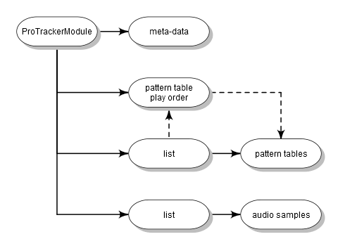

The PTModule class provides a container to store and modify and use ProTracker module files.
Details
MOD is a computer file format used primarily to represent music. A MOD file contains a set of instruments in the form of samples, a number of patterns indicating how and when the samples are to be played, and a list of what patterns to play in what order. The simplified structure of a module class is visualised in the scheme below. Details are given in the slot descriptions below.

This class is designed to hold all relevant information of a ProTracker
module (MOD) for which ProTracker 2.3a documentation was used. The ProTrackR
package may be compatible with earlier or later versions, but this was not
tested. Use read.module and write.module to import
and export objects of class PTModule.
Slots
nameA
vectorof length 20 of classraw, representing the name of thePTModule. The name of a module can be extracted or replaced with thenamemethod.pattern.orderA
vectorof length 128 of classraw. Therawvalues represent the indices ofPTPatterntables and indicate in which order these patterns need to be played. Note that therawvalues are conform the indices used in ProTracker, starting at zero. In R, indices of objects start at one. Users need to compensate for this discrepancy theirselves.The pattern order table can be extracted or replaced with the
patternOrdermethod.pattern.order.lengthA single value of class
raw. Indicates the length of the visible (and playable) part of the pattern order table.Use the
patternOrderLengthmethod to extract or replace the length of a pattern order table of a module.tracker.byteA single
rawvalue. Gives an indication of which Tracker was used to produce a module file. In ProTracker modules, this byte is set to 0x7f, which is also used inPTModuleobjects. This value should not be changed.tracker.flagA
vectorof length 4 of classraw, indicates the version of a module, which basically reflects how many patterns the module can hold. For details, and extracting and replacing this flag see thetrackerFlagmethod.samplesList of length 31 of class "
PTSample".patternsList of class "
PTPattern" (the pattern tables). The list should have at least 1 element, and can have a maximum of 64 or 100 elements (depending on the state of thetrackerFlag).
References
https://en.wikipedia.org/wiki/MOD_(file_format)
https://wiki.multimedia.cx/index.php?title=Protracker_Module
See also
Other module.operations:
appendPattern(),
clearSamples(),
clearSong(),
deletePattern(),
fix.PTModule(),
modToWave(),
moduleSize(),
patternLength(),
patternOrderLength(),
patternOrder(),
playMod(),
playingtable(),
rawToPTModule(),
read.module(),
trackerFlag(),
write.module()
Examples
## create an empty PTModule class object:
mod.empty <- new("PTModule")
## get an example PTModule class object
## provided with the ProTrackR package:
data("mod.intro")